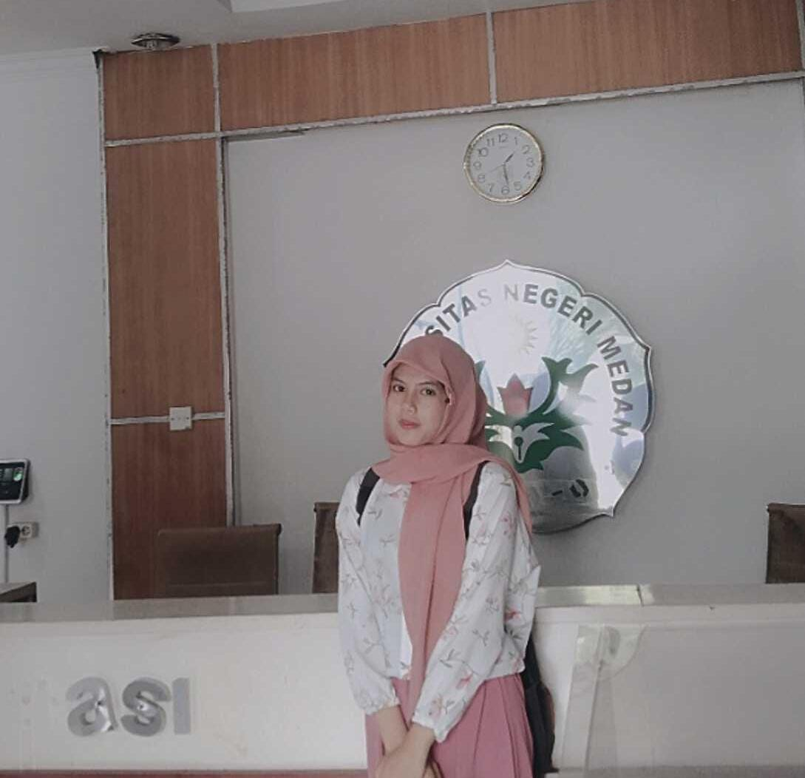

About Me

Halo, saya Windy Aulia, seorang mahasiswa ilmu komputer dengan minat mendalam dalam pemrograman dan pengembangan perangkat lunak. Saat ini, saya sedang menyelesaikan studi di Universitas Negeri Medan, di mana saya mengkhususkan diridalam bidang Ilmu Komputer.
Di blog ini, saya berbagi pengalaman, pengetahuan, dan proyek-proyek terbaru saya dalam dunia pemrograman. Dari tutorial dan panduan hingga analisis tren teknologi terkini, tujuan saya adalah untuk memberikan wawasan yang berguna bagi sesama pengembang dan mereka yang tertarik dengan teknologi.
Terima kasih telah mengunjungi blog saya. Jangan ragu untuk berinteraksi, bertanya, atau berbagi pemikiran melalui dengan saya di instagram account @so_ourcandy.s.Saya selalu terbuka untuk diskusi dan kolaborasi dalam bidang pemrograman.
Selamat datang di halaman kami!
Ini adalah konten halaman yang bisa disembunyikan atau ditampilkan.
Skills
PEMOGRAMAN
C++
Phyton
HTML
JAVASCIRPT
Education
EDUCATION
1. Learn multiple programming languages (e.g., Python, Java, C++) to broaden your coding skills and understand different paradigms.
2. Gain a strong grasp of fundamental data structures (e.g., arrays, linked lists, trees) and algorithms (e.g., sorting, searching). This knowledge is crucial for problem-solving and technical interviews.
3. Understand how computer hardware interacts with software. Knowledge of operating systems helps in grasping system-level programming and performance optimization.
Experience
EXPERIENCE
1. Magang (Internship)
2. Proyek Freelance
3. Pekerjaan Paruh Waktu di Bidang Teknologi
4. Proyek Akademis dan Penelitian
Work
WORK
1. Pengembang Perangkat Lunak (Software Developer)
2. Pengembang Perangkat Lunak (Software Developer)
3. Data Scientist
4. Analis Keamanan Siber (Cybersecurity Analyst)
Blog
BLOG
1. Aplikasi Pengingat: Buat aplikasi sederhana yang dapat mengingatkan pengguna tentang tugas atau acara penting. Gunakan bahasa pemrograman seperti Python atau JavaScript.
2. Aplikasi Pengingat: Buat aplikasi sederhana yang dapat mengingatkan pengguna tentang tugas atau acara penting. Gunakan bahasa pemrograman seperti Python atau JavaScript.
3. Game Sederhana: Cobalah membuat game sederhana seperti Tic-Tac-Toe atau Snake. Ini adalah cara yang menyenangkan untuk belajar tentang logika permainan dan pengembangan antarmuka pengguna.
4. Aplikasi Cuaca: Buat aplikasi cuaca yang dapat mengambil data dari API cuaca dan menampilkan informasi kepada pengguna. Ini dapat membantu Anda memahami cara kerja API dan pengolahan data.